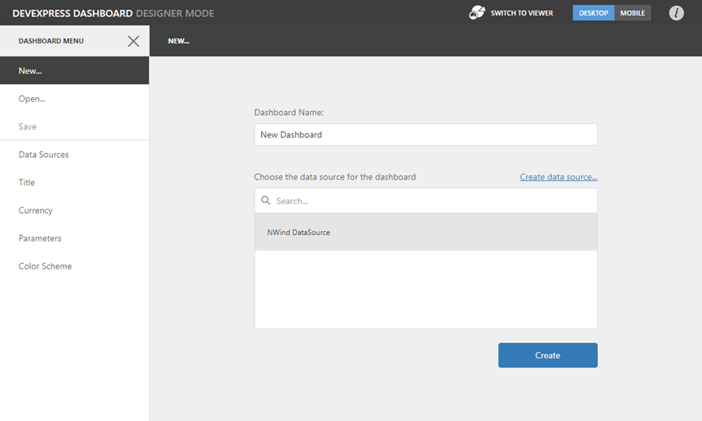

Connect to an Existing Data Source
The Web Dashboard allows you to connect a dashboard to one of the existing data sources or add data sources to the dashboard's data sources collection.
Connect a New Dashboard to an Existing Data Source
When you create a new dashboard, the New page of the dashboard menu is invoked. You can select an existing data source from the list or create a new data source.

This action creates a new empty dashboard that is bound to data. Now, you can add dashboard items and bind them to data.
Add a New Data Source to the Existing Dashboard
You can add an existing data source to the dashboard. To learn more, see Manage Data Sources.